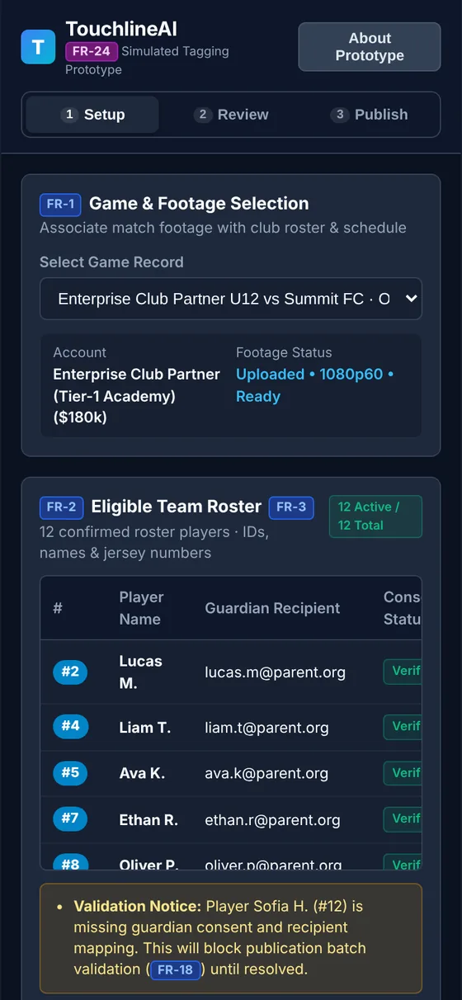
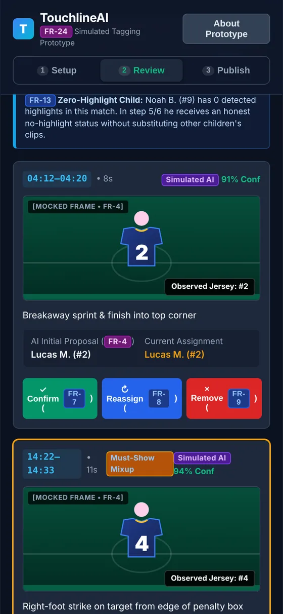
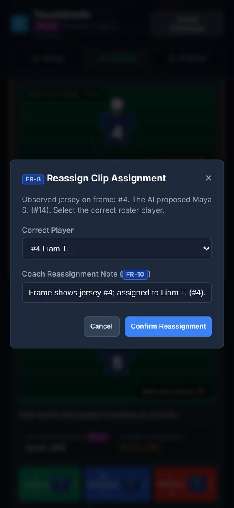
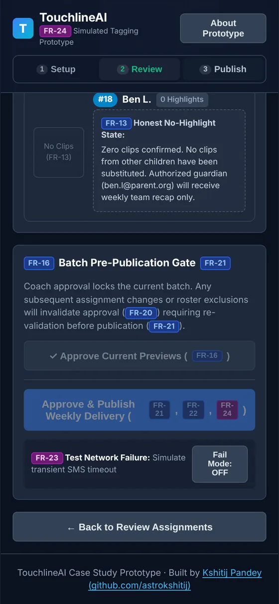
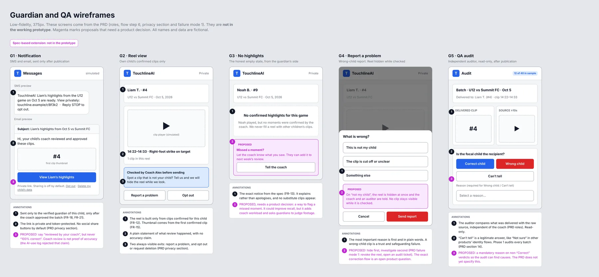
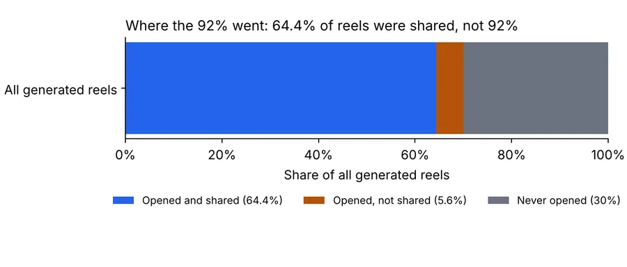
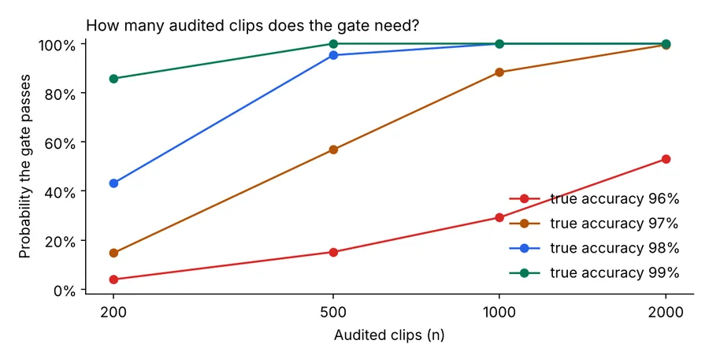
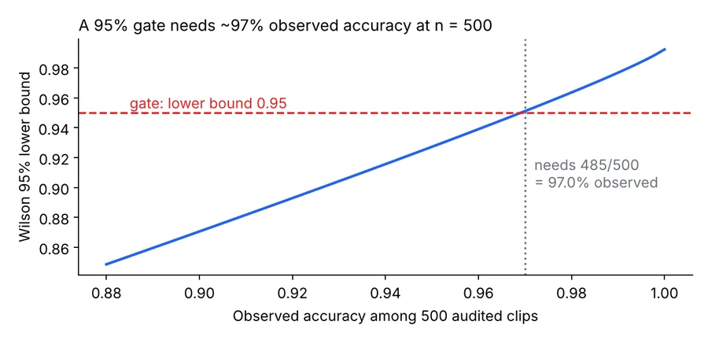
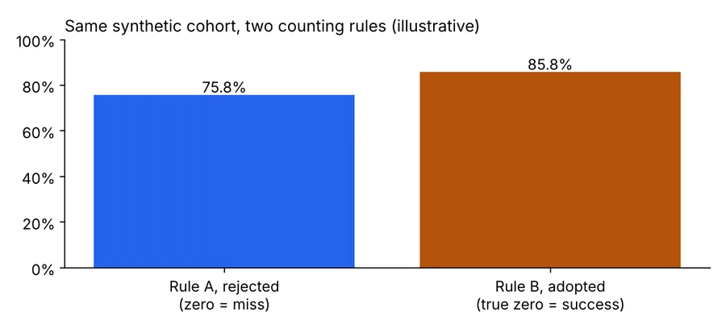

Product case study
How do you stop a youth-sports app sending one child's highlight to another child's parent?
TouchlineAI is a human-in-the-loop design for AI-tagged youth sports clips. The coach decides every clip, publication is blocked until it is safe, and a child with no highlights gets an honest notice instead of someone else's footage.
Read this first. This is a portfolio project that began as a product-management assessment, now closed. It uses fictional data. The AI and the delivery are simulated: no video is analysed, no one is recognised, and nothing is sent.
The problem and the call
Figures below were checked against the assessment brief and are labelled as such. Reasoning is marked as inference.
What was reported
Three support tickets across three clubs (soccer, lacrosse and little league) described four wrong-child incidents: a child wearing 14 shown a 4's clip, a coach who saw it twice with swapped-digit numbers, and a 1 shown an 11's clip. About 30% of generated reels went unopened. A flagship club wanted every game live-streamed for grandparents and college scouts, tied to a $180k-a-season renewal.
What comes first
Reliable correct-child assignment first. Notification timing is the runner-up. Livestreaming gets a bounded feasibility investigation before any build commitment.
The line that never moves
Model confidence, even 99%, never skips the coach. The cause of the wrong-child errors is not stated anywhere in the brief, so this design assumes none.
The prototype
A clickable, dependency-free web app (one HTML file). It runs the review-and-publish rules in your browser against fictional data.




What the rules enforce
- Every clip starts unresolved. No bulk confirm.
- Removal needs a reason. The reason starts blank.
- Publishing is blocked by unresolved clips, missing consent or recipient, or a clip past the end of the footage.
- Any change after approval requires a fresh approval.
- Excluded children stay visible with their reason.
- After the simulated publish, review is locked.
What is simulated
- Detection and confidence scores are fixed fictional data.
- Frames are drawn graphics, not footage.
- Delivery is simulated, with a failure you can switch on and retry.
- No backend, login or saved data. The decision log resets on reload.
Quality: automated browser checks cover the flow, the publication gates, console errors, outside network requests, and layout at four screen widths. They test this prototype only, not a real product.
Wireframes
Thirteen coach-flow screens were designed in Figma (view only), with every state: blocked, error, empty, failed delivery, locked. The guardian and QA screens below come from the spec and are not in the prototype. Magenta marks proposals that still need a decision.

Data analysis
A reproducible audit of the numbers behind the case. Inputs are the brief's figures plus clearly labelled synthetic simulation. Nothing here is real product data.
of all generated reels were shared, not 92%. The 92% counted only reels that were opened.
of reels were opened but not shared, so "35.6% of reach to unlock" overstates the prize.
correct clips (97%) are needed to pass a gate of 95% at 95% confidence.
chance that a truly 97%-accurate system passes at 500 audited clips. At 1,000 it is about 88%.




Product decisions
Ten decisions, each with a reason, are recorded in the repository. These are the ones that shaped the design.
| Question | Decision | Why |
|---|---|---|
| Can high confidence skip the coach? | No, at any phase. Confidence only orders and flags the queue. | A confident model can still be wrong, and a wrong-child delivery is a trust and safeguarding failure. |
| Does an honest zero-highlight week count as success? | A verified true-zero week does. A missed moment is a miss. Report Highlight Coverage next to the metric. | Counting honest zero as a miss lowered the metric by about 10 points in the synthetic cohort and pushes toward padding reels. |
| How strict is the Phase 1 gate? | At least 50 clean matches, a lower bound of at least 0.95 on at least 1,000 audited clips, and no open wrong-child incident. | At 500 clips a truly 97%-accurate system fails the gate about 43% of the time. |
| Warn when the frame's jersey differs from the assigned child? | Yes, as a non-blocking hint, then test it. | Cheap and aimed at the 14-vs-4 failure. The risk is warning fatigue, so it goes in the usability test. |
| Review after publishing? | Locked. A revoke-and-reissue flow is future work. | The delivered batch must not drift from what was sent. |
| Where do teardowns stand? | Published as labelled drafts. | They rest on public pages that were read second-hand, so claiming hands-on work would mislead. |
AI evals: how AI was used, and how its output was checked
AI tools drafted much of the documents and the prototype. Their output was treated as a draft to be checked, not as a source. This section reports what the checks found. Every count below comes from a ledger file in the repository, and the browser tests fail if this page and the ledger disagree.
Scope. No AI model was built or evaluated in this project. This is an audit of AI-drafted text and code. The plan for evaluating a future detection model is in the pre-mortem project and is a plan only.
claims checked in two review passes. The drafts were AI-assisted.
were unsupported: 12 with no source, 7 stronger than the evidence allows, 3 contradicted by the brief or the repo.
matched the original brief.
contradicted another part of the repository. One more is author-sourced and cannot be checked against the brief.
These are counts of ledger rows, not an error rate. The rows are the claims that were chosen or flagged for checking, not a sample of every sentence in the repository.
What was checked, how, and what changed
| What the AI produced | How it was checked | What failed | What changed |
|---|---|---|---|
| Specific details: a jersey pair, notification open rates by day, recap length and window, a survey question, an effort estimate, club names | Each compared with the original brief | None of them is in the brief (five rows: four with no source, one with the wrong club sports) | Removed everywhere, including this page. The brief's own hypothesis (late-night notifications) replaced the invented one |
| Technical causes for the wrong-child errors, and a claim that they drive the unopened reels | Compared with the support tickets and the analytics note | The tickets give no cause. The analytics note only suggests one | Causes deleted. The spec says the cause is unknown. The link to unopened reels is labelled a hypothesis |
| Numbers that were arithmetic, such as 64.4% and "35.6% to unlock" | Recomputed and the assumptions written out | The values needed assumptions (30% unopened, unopened never shared) that were not stated, and 35.6% included opened-but-unshared reels | Restated as about 64% with both assumptions, and as a 30% / about 6% split |
| Approvals, legal wording and prototype claims: "Approved by Product Leadership", "COPPA violations", "immutable audit trail", a cited test file | Read against the repository itself | Nobody approved anything, no legal review exists, the prototype keeps an in-memory log, and the cited test file was missing | Marked as drafts or hypotheses, reworded, and replaced by a test suite that can be run |
| Shortcuts that weaken the safety rule: a bulk-confirm button, a "100% zero wrong child" banner, silently excluding children without consent (from the assessment-time log) | Compared with the product rule that the coach decides every clip | Each one would let an unchecked or hidden decision through | Rejected. Every clip starts unresolved, the success message says delivery is simulated, and exclusions stay visible |
Review without the source
20 entries. The reviewer had only the repository: its own files, its AI log and arithmetic. It found real internal problems. It also left the invented ticket, notification and recap details in place, listing them as things to check against the originals.
Review against the brief
14 entries. With the original brief supplied by the author, 8 matched and 5 did not (4 had no source, 1 was wrong). One more is author-sourced and not in the brief. Pass 1 had also softened an invented effort figure to "a proposed 8-week build". Pass 2 removed it.
The author's own AI-use log
14 log entries, kept during the assessment, record 10 problems with AI output: 1 with no source, 3 overstated, 2 spec contradictions and 4 defects in the prototype build. The builder reported passing tests while a bulk-confirm button was still in the code. It was found by reading the code against the requirements.
After the first two passes (counted separately, 21 entries). 7 were confirmed: five recomputed statistics, the survey wording and the prioritisation scores. 14 were wrong, overstated or out of date and were fixed. They include "80 browser checks" on this page, "not re-checked" labels left in the specs, overstated lines in the trade-off memo, model versions in the workflow log that the original log does not give, and two errors made by this audit itself: a counting row that was silently dropped, and a memo line saying the brief mentions no threat to leave, when it does. 0 items are open.
The rubric the checks followed
Per the author, checking was planned at the start: every output, AI-drafted or the author's own, was to be scored 1 to 5 against a written rubric.
Gates and a verdict
Some criteria are gates. A gate below 3 means redo. Any criterion below 4 means fix. Otherwise ship. Each verdict names the cheapest fix and what it costs in time.
Three kinds of check
An ingest check after reading each source (complete? nothing invented? metric traps?). A rubric per task: prioritisation, spec, prototype, AI-use note, pushback, video. A slop checklist for any AI output.
A line fails if it has
A number with no source. A quote not in the materials. Boilerplate that fits any product. Hedging with no decision. Numbers that differ between sections. Features or users that do not exist. Padding. An em dash.
The rubric assigns two judges: a quick self-check by the same model family, and an independent second-model judge at three checkpoints. In the run, the independent judge became unavailable and a separate reviewer from the drafting model family stood in, which the author's log calls "a second review, not an independent model family". One rubric result is recorded in the submission: a spec checkpoint scored 4 or 5 on every criterion and passed its gates, verdict SHIP. An independent review of the later repository found three blocking spec questions, now answered as proposals. Those are different versions of the document and both are reviewer judgments. The other scores from the original run are not in this repository, so none are reported here. The slop checklist was run again over the text of this section, and the browser tests check the counts against the ledger and check for em dashes and stock phrases. A paraphrase of the rubric is in the repository.
What the work taught
- An AI that drafts without a source fills gaps with plausible, confident detail. A review that does not hold the source cannot catch it.
- A fix can carry the same fault. The effort figure was softened, not removed, until the second pass.
- An AI builder's report of passing tests did not mean the safety rules held. Reading the code against the requirements found the bulk-confirm button.
- Safety rules need tests, not just wording. Several tests now guard the rules the AI proposed to bend.
Limits of this audit
- Both review passes were run with an AI coding assistant. The author supplied the original brief and reviews the changes. The brief is not published here, so pass 2 cannot be re-run by a reader.
- The verdicts are classifications made by reading each row. They are not measurements.
- Almost all of the problem entries (24 of 25) were already in the first commit. The commit history does not record which AI tool drafted them, so that attribution rests on the author's statement and the assessment log.
- The assessment-time entries come from the author's own log, which is not in this repository. The repository's copy of that log differs in places (model versions and some quoted AI text that the original does not contain), and is annotated.
More in the repository
Experiment design
Notification timing, with sample sizes: about 1,900 guardians per arm to detect a 5-point lift, using an assumed clustering factor.
Pre-mortem and AI evaluation plan
Ten failure stories with early warnings, and a plan to measure models by slice before trusting any of them.
Livestream feasibility brief
A bounded five-day plan and decision template. It claims no cost or effort estimates.
Teardown: Veo
How a mass-market AI sports camera handles an event assigned to the wrong player. Needs hands-on verification.
Teardown: Hudl Assist
Human tagging as a service, plus Google Photos as a pattern for correcting AI face groups. Needs hands-on verification.
Claims and evidence
Every claim is labelled source, inference, target or simulated, with the open checks listed.
Limits, stated plainly
- The scenario figures (tickets, 30% unopened, 92% share, 58% survey) come from the assessment brief and were checked against the assessment brief. Targets and simulated values are labelled.
- No model was built or evaluated. No accuracy claim is made anywhere.
- Checks run in your browser, so they show the intended rules. A real system must enforce them on a server.
- Consent handling is a mock and has had no legal review.
- The two teardowns are desk research and are marked as drafts.